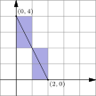

线段水平跨 $a=3000$ 列、竖直跨 $b=5000$ 行。每穿过一条网格线就进入一个新格子，共穿过 $a+b$ 条网格线；但经过内部格点时是「横线竖线同时穿过」，进入的新格子只算一个而不是两个——这种合并恰好发生 $\gcd(a,b)-1$ 次。于是总格数 $=a+b-\gcd(a,b)=3000+5000-1000=7000$。夹进去的那个 gcd，就是数回购鼖掉的重复计数。
Rodrigo has a very large piece of graph paper. First he draws a line segment connecting point $(0, 4)$ to point $(2, 0)$ and colors the $4$ cells whose interiors intersect the segment, as shown below. Next, Rodrigo draws a line segment connecting point $(2000, 3000)$ to point $(5000, 8000).$ Again he colors the cells whose interiors intersect the segment. How many cells will he color this time?
中文翻译：Rodrigo 有一张很大的方格纸。他先画一条连接 $(0,4)$ 与 $(2,0)$ 的线段，把与该线段内部相交的 $4$ 个格子涂色（如图）。接着他画一条连接 $(2000,3000)$ 与 $(5000,8000)$ 的线段，同样把内部与之相交的格子涂色。这一次他会涂多少个格子？ (A) 6000 (B) 6500 (C) 7000 (D) 7500 (E) 8000
📌 官方答案（LIVE by Po-Shen Loh）：
https://live.poshenloh.com/past-contests/amc8/2024/problem/23
官方给出的正确选项为 (C) 7000，本站解析与之一致。
| 常见错误 | 错在哪 |
|---|---|
答 (E) 8000 | 用 $a+b=3000+5000=8000$ 直接当答案，等于假设「每穿过一条网格线都进入一个全新的格子」。这在水平的 Rus 线段上恰为真，但一般线段会在某些点同时穿过横线和竖线（经过格点），那一刻两条线一次跨完，少进一个格子。漏减 $1000$ 正是忽略这批格点上的「对角跨越」。 |
答 (B) 6500 | 知道要减「重复」，却减错了数：蓝色地把减去量算成 $\gcd-1=999$ 之外还多减了 $1$（即减 $1500$ 或类似），或者干脆用 $\gcd(3000,5000)$ 算成 $500$（把 $3000$ 与 $5000$ 的最大公因数错算——$3000=1000\cdot3$、$5000=1000\cdot5$，互质部分是 $3$ 与 $5$，所以 $\gcd=1000$，不是 $500$）。这类错误一半出在公式记忆、一半出在 $\gcd$ 的计算本身。 |
根本问题：没有把「进新格子」这个动作跟「穿过网格线」做精确的一一对应。正确对应是：每穿过一条网格线段就进新格一次，唯独经过内部格点时横线竖线一次性跨完（一个动作换了三个方向的两个邻居格中的另一格）。数出内部格点是 $\gcd(a,b)-1$ 个，公式就自动成立。另外，先用题面给的小样例 $(0,4)\to(2,0)$（$2+4-2=4$ 与题面的「4 个格子」完全吻合）验证公式，能挡掉绝大多数公式记错的情况。
与官方解法同源：本站方案一的核心不变量与官网 2024AMC8(23) 的书面解答一致——线段穿过的格子数是 $a+b-\gcd(a,b)$（$\gcd$ 扣掉的是过格点时「竖穿 + 横穿」的重合计次），代入 $a=3000,b=5000,\gcd=1000$。
本站的增量在于把官网因篇幅省略的中间推理与易错点补全；若另有不同思路，作为方案二呈现。
第 1 步 · 建立计数模型。把线段看作从起点出发一路向前，每穿过一条网格线就进入一个新格子。设线段水平跨 $a$ 列、竖直跨 $b$ 行，则它要穿过 $a$ 条竖网格线与 $b$ 条横网格线——但终点不算（终点在线上路了）。
第 2 步 · 唯一的重复：内部格点。当线段正好经过一个格点（横竖坐标都是整数）时，它同时穿过该点处的横线与竖线，一次跨完；此时「进入新格子」发生 1 次，而不是 $2$ 次。所以总格子数要在 $a+b$ 的基础上减掉这类点的个数。
第 3 步 · 数内部格点。从 $(0,0)$ 到 $(a,b)$ 的线段上格点个数为 $\gcd(a,b)+1$（含两端），故内部格点有 $\gcd(a,b)-1$ 个。（理由：设 $g=\gcd(a,b)$，把 $a=ga',b=gb'$ 且 $\gcd(a',b')=1$，则参数方程 $(x,y)=(ta',tb')\cdot g$… 段上的格点恰对应 $t$ 取 $0,\frac1g,\dots,1$ 共 $g+1$ 个。）
第 4 步 · 套公式到小样例校验。题面给 $(0,4)\to(2,0)$：$a=2,\ b=4,\ \gcd=2$，
$$\text{格数}=2+4-2=4,$$与题面说的「4 个格子」严格吻合 ✓ 公式可信。
第 5 步 · 代入本题。$(2000,3000)\to(5000,8000)$：
$$a=5000-2000=3000,\quad b=8000-3000=5000,\quad \gcd(3000,5000)=1000,$$$$\text{格数}=3000+5000-1000=7000 .$$
答案：(C) 7000。
令 $g=\gcd(a,b)=1000$。线段被内部格点等分成 $g$ 段，每段对应端点差 $(a/g,\ b/g)=(3,5)$，而 $\gcd(3,5)=1$。由样例附近的经验，$\gcd=1$ 的线段（互质情形）穿过 $$a'+b'-1=3+5-1=7\ \text{个格子}$$ （最开始 1 个，之后每穿一条线 +1，且永不经过内部格点）。$g$ 段首尾相接但共顶点处的格子已被前一段计过？——需要注意的是相邻两段共用的那个格点处的格子会被重复计：$g$ 段各 7 格共 $7g$，但相邻两段在格点处「共享」一个格子（跨段的那个格子被计了两次），所以要减去 $g-1$： $$\text{总数}=7\times1000-999=7000 .$$ 与方法一完全一致。这个视角的价值在于把「互质情形」孤立出来：$a+b-1$ 是它的干净答案，一般情形只是把它重复 $g$ 次再去掉接缝。
验证技巧：① 小样例自检：$\gcd$ 公式在 $(0,4)\to(2,0)$ 上给出 4，与题面明示的 4 个格子吻合；② Python 用密采样模拟 $(a,b)=(2,4),(3,3),(2,2),(4,2),(1,5)$ 五组，公式值与模拟值全部相等；③ 本题规模 $3000+5000-1000=7000$，与选项 (C) 精确对齐，且 $(\text{D})-(\text{C})=500$ 正好是「把 gcd 错算成 500」的陷阱项。
核心知识点：从 $(0,0)$ 到 $(a,b)$ 的线段穿过的单位格数量为 $$N=a+b-\gcd(a,b).$$ 推导只有两步：① 每穿过一条网格线进入一个新格，共穿 $a+b$ 条线（终点不计）；② 每当线段经过内部格点，横线竖线同时穿过，本应两个动作合并成一个，要减 1——内部格点恰有 $\gcd(a,b)-1$ 个，于是 $N=1+a+b-1-(\gcd-1)=a+b-\gcd$。这条公式是格点几何的入门结论，用得非常频繁。
必须掌握的要点：
用公式求从 $(0,0)$ 到 $(4,6)$ 的线段穿过的单位格数。
$a=4,\ b=6,\ \gcd(4,6)=2$，格数 $=4+6-2=8$。密采样模拟亦得 8 ✓。
要点：先算 gcd 再套 $a+b-\gcd$；gcd 算错是此题最常见的失分点。
从 $(0,0)$ 到 $(6,9)$ 的线段穿过多少个单位格？若把终点改成 $(6,10)$，结论又如何？
$(6,9)$：$\gcd=3$，格数 $=6+9-3=12$。$(6,10)$：$\gcd=2$，格数 $=6+10-2=14$。注意 $(6,9)$ 与 $(6,10)$ 相比后者起点终点更远但穿过的格子更多，且这里的「更恰 świeżo工业园区 6+10」大于 12——因为 gcd 变小了（重复计数变少），格子数反而上升。
要点：$a+b$ 相同时，$\gcd$ 越小穿过的格子越多——因为「格点合并节省」的格子更少。
一条线段穿过 $15$ 个格子，且 $\gcd(a,b)=3$。求所有可能的正整数对 $(a,b)$（视 $(a,b)$ 与 $(b,a)$ 为不同）。
由 $a+b-3=15$ 得 $a+b=18$，且需 $\gcd(a,b)=3$。枚举 $a+b=18$ 的正整数对并检验 gcd： $(3,15)\,g=3$ ✓；$(4,14)\,g=2$ ✗；$(5,13)\,g=1$ ✗；$(6,12)\,g=6$ ✗；$(7,11)\,g=1$ ✗；$(8,10)\,g=2$ ✗；$(9,9)\,g=9$ ✗。 咦——$(9,9)$ 的 gcd 是 9 不满足条件。重新核算：满足 $\gcd(a,b)=3$ 且 $a+b=18$ 的只有 $(3,15)$ 与 $(15,3)$（$(15,3)$ 与 $(3,15)$ 视为不同时共 2 组；视为同一 conformation 则 1 组）。答案：$(3,15)$ 与 $(15,3)$。
要点：逆为题最容易错在「忘了回头验证 gcd」：$a+b=18$ 有很多解，真正满足 $\gcd=3$ 的只有两组。
在 $a+b=30$ 的所有正整数对中，穿过的格子数最多是多少？最少是多少？各对应哪几组 $(a,b)$？
格数 $=30-\gcd(a,b)$。要让格数最多就让 $\gcd$ 最小 $=1$ → $29$（$(1,29)$、$(7,23)$ 等互质对均可）；要让格数最少就让 $\gcd$ 最大。$a+b=30$ 时 $\gcd$ 必须整除 30，可能取 $1,2,3,5,6,10,15,30$；$a=b=15$ 时 $\gcd=15$（$30$ 不可能，那要求两者都是 30 的倍数）→ 格数 $=30-15=15$。答：最多 29、最少 15。
要点：格数 $=a+b-\gcd$：固定 $a+b$ 时差别全在 gcd 上——互质给最多，尽量共处因子给最少。
证明：从 $(0,0)$ 到 $(a,b)$（$a,b$ 正整数）的线段穿过的单位格数为 $a+b-\gcd(a,b)$。提示：按「每穿一条网格线进新格」计数，并单独处理经过内部格点时的重复。
记 $g=\gcd(a,b)$。① 起始：线段从起点格出发，先占 1 格。② 逐线计数：向右推进要跨 $a-1$ 条内竖线、向上要跨 $b-1$ 条内横线；每跨进一条就 +1 格，故若线互不相干总数为 $1+(a-1)+(b-1)=a+b-1$。③ 修正重复：当线段经过内部格点时，它同时跨越该点处的横线与竖线，是一个动作跨两条线；上面按线计数把它当成两次 +2，实际只应 +1，每处需减 1。内部格点恰有 $g-1$ 个（见要点 3）。于是 $$N=(a+b-1)-(g-1)=a+b-g=a+b-\gcd(a,b).\ \square$$ 边界检验：$(a,b)=(1,1)$ 时 $N=1+1-1=1$（对角穿一个格）✓；$(a,b)=(2,0)$ 时（退化为水平）公式给出 $2+0-2=0$，这正是为什么不适用于 $b=0$ 的情形——水平线段应贴在网格线上，内部不相交任何格子。本题的应用情形两端点都不是同行/同列，公式安全。
要点：证明的核心是「重复只发生在格点」；看清～ 适用范围别忘：$a,b$ 都为正才成立（有平行于轴的情形需单独处理）。
口诀：「跨线进新格，格点合并一次」——$a+b-\gcd$ 就是把一句话写成公式。